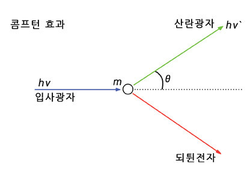

콤프턴 효과
X선(전자기파)을 흑연판에 출동시켰을 때, 전자는 바깥으로 나오고, X선은 산란되어 나온다.

이 때, 처음 X선의 파장을 λ, 나중에 산란되는 X선의 파장을 λ'라고 하자.
고전역학에 의해서는 λ와 λ'의 파장은 같아야한다. (λ=λ') 하지만 처음 X선과 나중 X선의 파장의 길이는 변하였다.
바로 나중 파장의 길이가 처음 파장의 길이에 비해 더 길어진 것이다. (λ<λ')
이 현상을 통해 한 가지의 식을 얻을 수 있었다.
p=ℎ/λ
위 식과 현상을 분석한 결과 충돌하는 입자의 질량이 작을수록, 광자의 산란각이 180°에 가까울수록 파장의 길이가 길어지는
것을 알 수 있다. 이를 통해 빛이 입자성을 가질 수도 있다는 것을 알 수 있다.